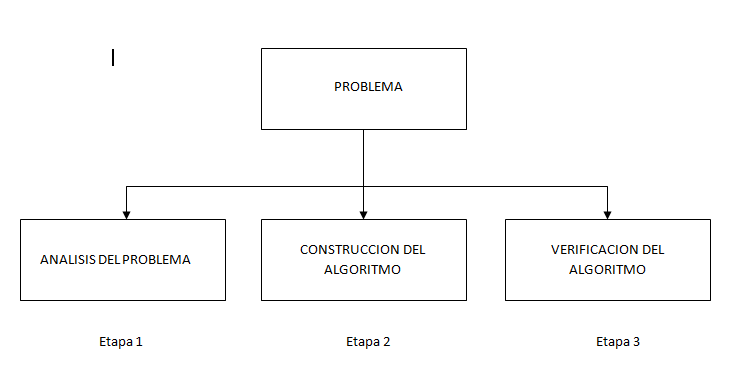

Problemas y Algoritmos
Conocimiento previo
Todos los días los seres humanos realizamos inconscientemente una serie de pasos que nos permiten alcanzar resultado, esa serie procedimientos se denomina algoritmo.
- Algoritmo: Es un conjunto de pasos procedimientos o acciones que nos permiten alcanzar un resultado o resolver un problema.
Por ejemplo cuando queremos hacer una carta en un computador primero debemos conectar el computador a la corriente eléctrica, luego encender el computador, luego entrar a nuestra sesión en el computador, después buscar el programa de edición de texto y luego empezar escribir la carta.
Este procedimiento se puede usar las veces que sean necesarias y siempre dara como resultado el escribir una carta.
ETAPAS PARA SOLUCIONAR UN PROBLEMA

Los algoritmos poseen tres caracteristicas:
- Precision: Los pasos a seguir en el algoritmo deben ser precisados claramente.
- Determinismo: Le algoritmo, dado un cojunto de datos identicos de entrada, siempre debe arrojar los mismos resultados.
- Finitud: El algoritmo, independientemente de la complejidad del mismo, siempre debe ser de longitud finita.